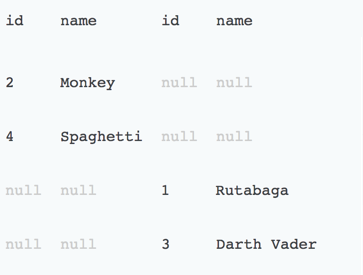

CTO Lecture Series
SQL 101
Recap
- Last time we learned how to a bunch of small things.
- We learned how to order results.
- We learned how to stick results together vertically.
- We learned how to do use case statements.
Order by
SELECT Name
, Year(Date) year
, CASE WHEN Max([Maximum Wind]) > 110 THEN 'Major' ELSE 'Not Major' END major
FROM atlantic
GROUP BY Name, Year(Date)
ORDER BY year DESC, major, name ASCUnion
SELECT Year(Date) year FROM atlantic
GROUP BY Year(Date) HAVING Max([Maximum Wind]) > 150
UNION
SELECT Year(Date) year FROM pacific
GROUP BY Year(Date) HAVING Max([Maximum Wind]) > 150Case
SELECT Year(Date) year, Name,
CASE
WHEN MIN([Minimum Pressure]) < 950 THEN
'Low'
ELSE
'Normal'
END pressure
FROM atlantic
GROUP BY YEAR(Date), Name
ORDER BY year DESC
Logging in
Joins
Used to join tables horizontally.
Sample Data
Inner Join
Used to get the results only in both tables

Inner join
Example
SELECT * FROM table_a A
INNER JOIN table_b B
ON A.name = B.nameInner Join

Full Outer Join
Used to get the results that exist in either side.
Inner join
Example
SELECT * FROM table_a A
FULL OUTER JOIN table_b B
ON A.name = B.nameInner Join

Left Join
Used to get the results in the left table

Left join
Example
SELECT * FROM table_a A
LEFT OUTER JOIN table_b B
ON A.name = B.nameLeft Join
Filtered Left Join
Used to get the results only in left table
Filtered Left join
Example
SELECT * FROM table_a A
LEFT OUTER JOIN table_b B
ON A.name = B.name
WHERE B.id IS nullFiltered Left Join

Right Join
Used to get the results in the right table

Right join
Example
SELECT * FROM table_a A
RighT OUTER JOIN table_b B
ON A.name = B.nameRIght Join

Filtered Right Join
Used to get the results only in right table
Filtered Right join
Example
SELECT * FROM table_a A
RIGHT OUTER JOIN table_b B
ON A.name = B.name
WHERE A.id IS nullFiltered Right Join
Filtered Full OUter Join
Used to get the results only in one table
Filtered Full Outer Join
Example
SELECT * FROM table_a A
FULL OUTER JOIN table_b B
ON A.name = B.name
WHERE A.id IS null
OR B.id IS nullFiltered Outer Join
Cross Join
Used to get every row in each table paired with every row in the other table.
There is no good venn diagram analogy for this.
Cross join
Example
SELECT * FROM table_a A
CROSS JOIN table_b BCross Join
Exercise 1
Get the all the names ever used for storms in the atlantic with a maximum wind speed of over 100
SELECT DISTINCT Name
FROM Atlantic WHERE [Maximum Wind] > 100Exercise 2
Find Name, Year and Maximum Wind speed of the 5 storms with the highest wind speed in the pacific.
SELECT Top 5 Name, Year(Date), MAX([Maximum Wind]) max_wind
FROM pacific
GROUP BY Name, Year(Date)
ORDER BY max_wind DESCExercise 3
Create a list of all the statuses of storms in either the atlantic of pacific ocean
SELECT DISTINCT Status FROM atlantic
UNION
SELECT DISTINCT Status FROM pacific Exercise 4
Create a list of statuses that can appear in either the atlantic or pacific oceans
SELECT DISTINCT Status FROM atlantic
INTERSECT
SELECT DISTINCT Status FROM pacific Exercise 5
Use an alias to select Name and Year from the atlantic table
SELECT A.Name, Year(A.Date) year
FROM atlantic AExercise 6
List all the storms and whether it is a major storm or not, ordered by year, whether it was major and then in alphabetical order.
SELECT Name
, Year(Date) year
, CASE WHEN Max([Maximum Wind]) > 110 THEN 'Major' ELSE 'Not Major' END major
FROM atlantic
GROUP BY Name, Year(Date)
ORDER BY year DESC, major, name ASCExercise 7
List all the storms and what category of storm it is, ordered by category descending, year and name
- Cat 1 is 74 to 95
- Cat 2 is 96 to 112
- Cat 3 is 112 to 130
- Cat 4 is 131 to 157
- Cat 5 is 157 and upwards
SELECT Name
, YEAR(Date) year
, CASE WHEN Max([Maximum Wind]) < 74 THEN 0 ELSE
CASE WHEN Max([Maximum Wind]) < 96 THEN 1 ELSE
CASE WHEN Max([Maximum Wind]) < 111 THEN 2 ELSE
CASE WHEN Max([Maximum Wind]) < 130 THEN 3 ELSE
CASE WHEN Max([Maximum Wind]) < 157 THEN 4 ELSE 5 END
END
END
END
END category
FROM atlantic
GROUP BY Name, YEAR(Date)
ORDER BY category DESC, year, Name ASC